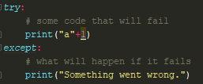
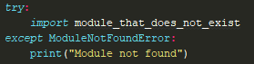
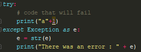
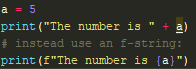
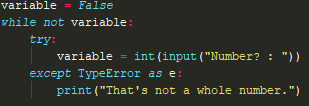
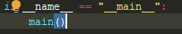

Smart Programming In Python
Errors are a pain to deal with in programming, especially in python where an error can cause the program to fail completely. It's important to deal with errors to make good, professional code.
The easiest way to deal with errors are using try/except statements. It's like an if/else statement, but instead of only happening if a condition is met, the program will try try, and if it fails, it will do except.
You can avoid specific errors, e.g. if you want to import a module, but aren't sure that the module exists, you can try except ModuleNotFoundError like so:

If you have a lot of code in your try, it can be difficult to find problems with no guidance. You can get an error message while still using try/except like so:

If you're a decent programmer, most errors will occur from inputs or outputs. You can avoid using str(), int(), float() etc. when printing by using something known as an f-string. instead of being in the format "string", they are shown as f"string" (remember, the f comes before the quotes!) and you put what you want to print in {braces}, so if you wanted to print myVar, you could do print(f"{myVar}"). 
Getting a valid input is important - if the input isn't what you want it to be, your program can fail entirely. You can check if the data can be converted, and if not then try to input again, you can do this:

this will only change the variable if it can be safely changed, otherwise it will try again to get an input.
You don't need to use hundreds of try/except statements. You can modify this program structure:
into this:

You write all you need above return 0. This should have no effect on your program other than how it looks.